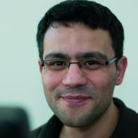

Emin Karayel
About Me
|  | I have a M.S. in mathematics from the KIT and more than 20 years of experience as a professional software engineer. In 2021, I decided to leave the industry and pursue a research career. I am currently working on a PhD at the Technical University of Munich in the field of formal verification. |
Peer-Reviewed Publications
| E. Karayel, E. Gonzàlez: Strong eventual consistency of the collaborative editing framework WOOT. Distributed Computing. (2022). |
| E. Karayel, Formalization of Randomized Approximation Algorithms for Frequency Moments. ITP 2022. |
| E. Karayel, An embarrassingly parallel optimal-space cardinality estimation algorithm. APPROX/RANDOM 2023. |
| E. Karayel, Derandomization with Pseudorandomness. Annals of Formalized Mathematics. (2025) |
| E. Karayel, S. J. Watt, D. Khu, K. S. Meel, Y. K. Tan, Verification of the CVM algorithm with a Functional Probabilistic Invariant. ITP 2025. [slides] |
Open Source Projects
| Name | Description |
| AFP Publications | List of formally verified work using Isabelle in the AFP. |
| sync-mht | A communication-efficient command-line file synchronization tool written in Haskell to synchronize large file hierarchies between local and remote sites. |
Other Appearances
| Date | Title |
| July 2015 | Blog article, Parsing Haskell command lines using Generics (in German) (Part 1) (Part 2) |
| April 2015 | Problem setter at Hackerrank contest: Lambda Calculi 10 |
| September 2014 | Stefan Wehr, Emin Karayel: CUFP Tutorial Haskell in the Real World |
Diploma Thesis
| Date | Title |
| August 2009 | Generalized Eigenfunction Expansions |
Patents
| Date | Inventors, Title |
| August 2010 | Emin Karayel, Carsten Heinz, Matthias Krings: Method for searching in a plurality of data sets and search engine |
| May 2010 | Emin Karayel, Carsten Kraus: Operating device for a user interface |
| June 2006 | Emin Karayel: Method for automatically valuating the similarity of two character strings which are stored in a computer |
CV
| Time | Position |
| since 2021 | Technical University of Munich, External PhD Student |
| 2016-2021 | Google, Senior Software Engineer |
| 2013-2016 | Medilyse GmbH, Haskell Software Engineer |
| 2002-2013 | Omikron Data Quality GmbH, Head of Research Team |
| 2001-2002 | Karlsruhe Institute of Technology, Tutor Linear Algebra |
| 2000-2009 | Karlsruhe Institute of Technology, M.S. in Mathematics |
| 1997-2000 | Omikron Data Quality GmbH, Software Engineer |
Contact Info
PGP Public Keyme@eminkarayel.de
 LinkedIn profile
LinkedIn profile https://orcid.org/0000-0003-3290-5034
https://orcid.org/0000-0003-3290-5034
Notes
This website by Emin Karayel is licensed under CC BY-NC 4.0Attributions: Key icon by Blaze150 and Email icon by Nawicon from the Noun Project.